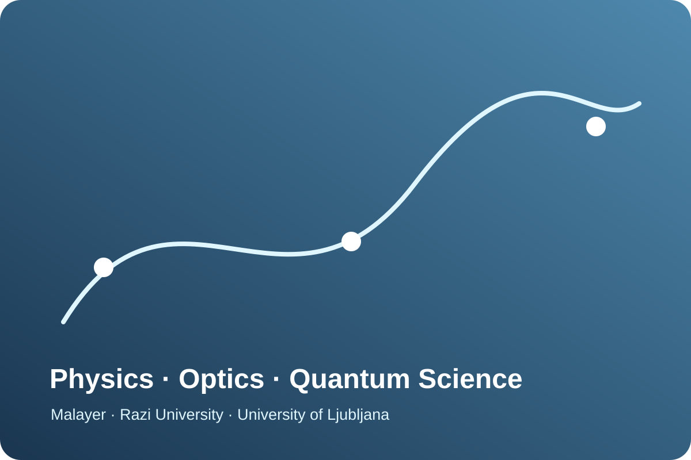
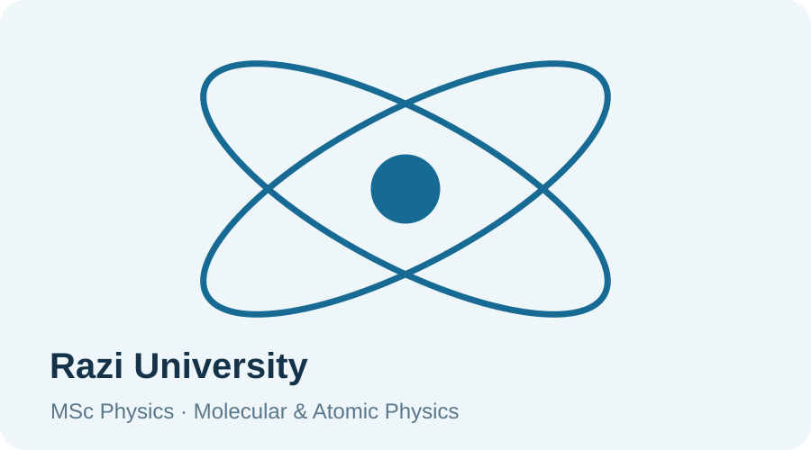
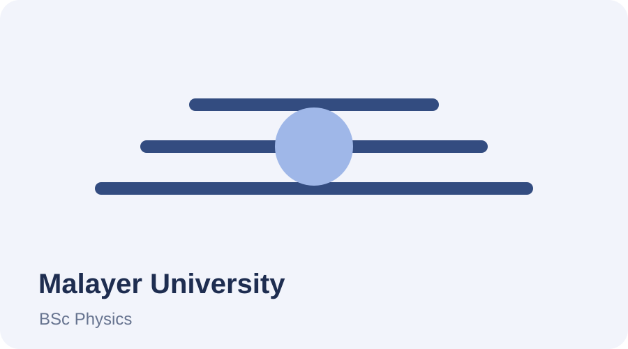

2023–Present
University of LjubljanaPhD in Physics
Quantum optics research with a focus on narrowband entanglement sources and atomic quantum memories.
PhD researcher in Physics at the University of Ljubljana.
Profile
My research focuses on quantum optics, narrowband entanglement sources, and atomic quantum memories. My current experimental work includes optical setup and alignment, cavity-based photon-source development, and scientific data analysis.
My earlier research covered plasmonics, nonlinear optics, graphene-based optical structures, broadband infrared absorption, optical forces, and numerical modelling using MATLAB and Mathematica.
Research Environment
Faculty of Mathematics and Physics · Quantum Optics & Quantum Foundations Laboratory
Academic Journey
Iran · Slovenia



Degrees
Quantum optics research with a focus on narrowband entanglement sources and atomic quantum memories.
Magneto-optical sensor based on optical bistability phenomena in nonlinear nanoparticles.
Languages